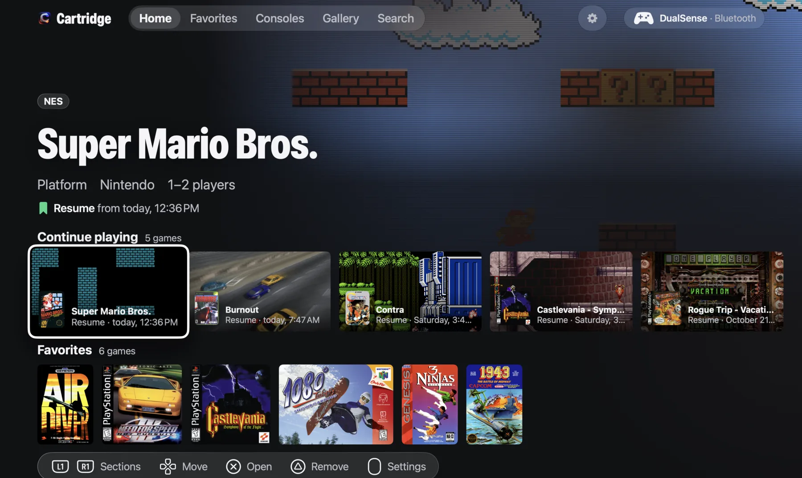
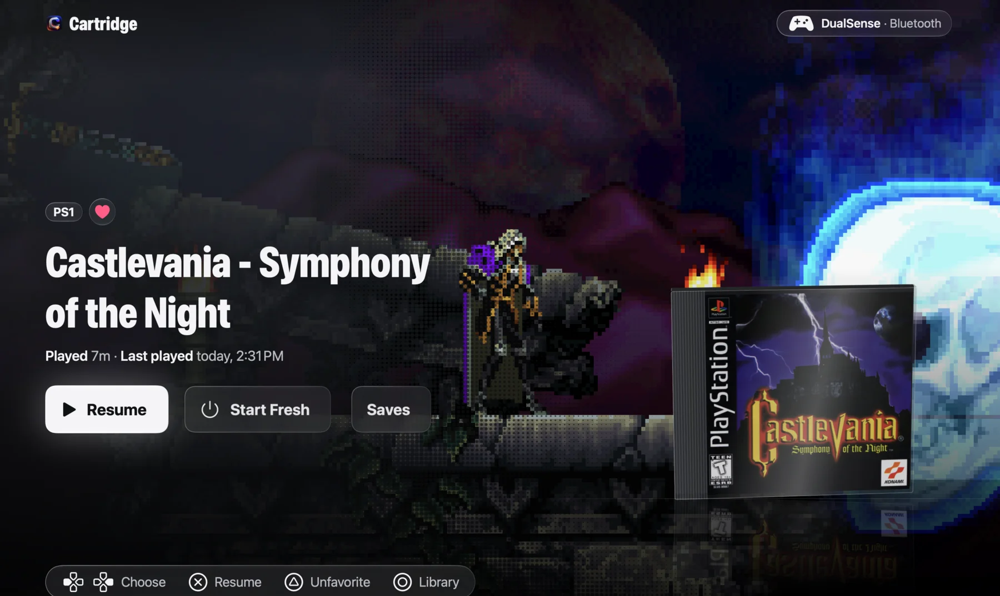
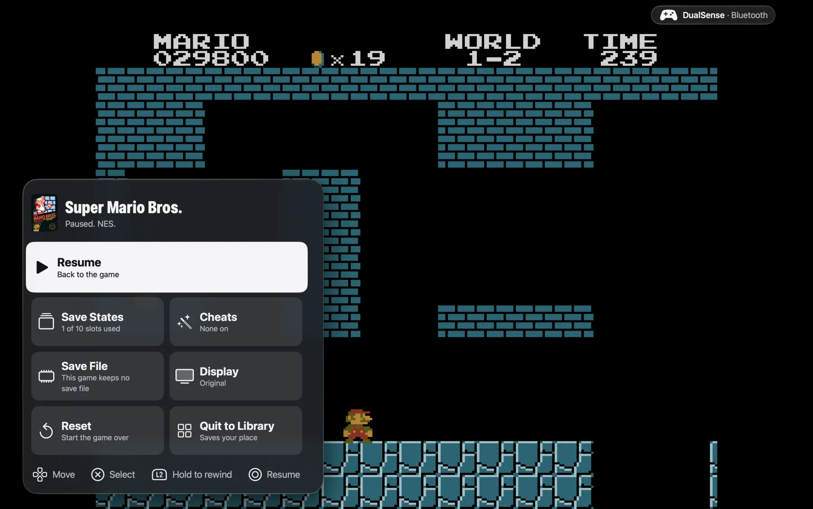
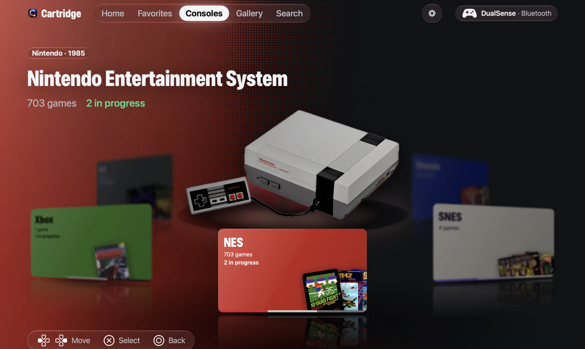

A native macOS retro gaming app
Your Mac. Its console era.
Your retro library on your Mac. Six classic systems in one native app, built around the DualSense.
Apple silicon · macOS 27
Free & open source. Signed and notarized.

- NES
- SNES
- GENESIS
- N64
- PLAYSTATION
- XBOX
A console experience.
On the Mac you own.
Choose your games folder and Cartridge builds the library: every game identified against the No-Intro and Redump databases, properly named, with box art, sorted by console. Your folder is never written to.
From there it’s all controller. Browse, play, save and capture with a DualSense over Bluetooth or USB, touchpad and Create button included.
Pick a game.
Pick up where you left off.


IN THE GAME
Stay in the game.
Press Play and the game takes over the whole display. The menu bar and cursor get out of the way, and macOS switches to Game Mode for smoother play and a more responsive controller. Click the touchpad and the hub opens over the paused game. Quit whenever you like: the next launch picks up exactly where you stopped.
- Click the touchpad for the hub
- Rewind and fast-forward
Resume or start fresh
Straight back in, or from the top.
Ten save slots
Each one with a thumbnail of where you were.
Rewind and fast-forward
Hold the triggers on NES, SNES and Genesis. From the hub on PlayStation, and fast-forward only on N64.
Cheats
The libretro cheat collection for your game, plus your own codes.
Battery saves
Back up, restore, and import a save file you already have.
Three looks
Original, Sharp and CRT.
THE GOOD PARTS, SAVED
That just happened.
Keep it.
Hold Create for a screenshot, a recording, or the last 30 seconds you just played. The Gallery plays your clips back, turns any clip into a GIF ready to post, reveals files in the Finder and deletes what you don’t want, all from the pad.
- Hold Create to capture

The machines.
The memories.
Each system brings its colours and its hardware into the frame. The Consoles page is a ring of machines you spin with the pad. Turn on Reduce Motion and Cartridge honours it.
THE LINEUP
Six systems. One app.
NES
Mesen
You bring ROMs.
Super Nintendo
Snes9x
You bring ROMs.
Sega Genesis
Genesis Plus GX
You bring ROMs.
Nintendo 64
Mupen64Plus-Next
You bring ROMs.
PlayStation
Beetle PSX
You bring discs and your BIOS dump.
Xbox
xemu, built from source
You bring discs and your own firmware dumps.
Every game runs in its own helper process, so a crashed core costs you that game and nothing else. BIOS and firmware are imported inside the app, never bundled or downloaded.
PAD FIRST. EVERYWHERE.
Made for the DualSense.
Bluetooth or USB. Every screen is driven from the pad, including the touchpad click and the Create button. Keyboard controls are supported too.
- Touchpad click
- Opens the hub over the game
- Hold Create
- Screenshot, recording, or the last 30 seconds
- Triggers
- Rewind and fast-forward on NES, SNES and Genesis
- Right stick
- Tilts the box on the game panel
READY WHEN YOU ARE
From download
to your first game.
Make yourself at home.
Download the disk image from GitHub Releases. Open it and drag Cartridge to Applications.
Bring your collection.
Open Cartridge, connect your DualSense, and choose your games folder. The library takes it from there.
Pick up where you left off.
Choose a game and play. Next time, resume right where you stopped.
What do I need?
An Apple silicon Mac running macOS 27, your own games, and a PS5 DualSense connected over Bluetooth or USB. A keyboard works too.
Are games or BIOS files included?
No. Bring your own ROMs or discs. For PlayStation, import your BIOS dump; for Xbox, import your own firmware dumps when prompted or through Settings. Cartridge never bundles or downloads them.
How should I organize my games?
However you like. Choose one folder and Cartridge looks through it and every folder inside it, recognising each game by its file type and checksum, so a single mixed folder works as well as one folder per console. Your games stay where they are and are never copied or changed. PlayStation games need their .cue and .bin files side by side, and cartridge games can be zipped. After adding games, choose Rescan in Settings.
Where are my saves and captures?
Your library, saves, captures and imported firmware stay in ~/Library/Application Support/Cartridge/. Your original games folder is never written to.
Do all systems support every feature?
N64 and Xbox have no rewind, and Xbox has no fast-forward or cheats yet. Rewind and fast-forward sit on the triggers for NES, SNES and Genesis; on N64 and PlayStation they are in the hub.
Does Cartridge collect anything?
No account, no telemetry, no analytics. The one place it connects to is the box-art server. Everything else stays as plain files on your Mac.
YOUR LIBRARY IS WAITING
Press play.
Requires an Apple silicon Mac on macOS 27. Free software under the GPL-3.0.